Esta funcionalidad permite al docente desarrollar todo el proceso de ingreso de notas, habilitaciones y autorizaciones para los estudiantes. Incluye la gestión de notas dentro de un sistema de evaluación con alcance de GRUPO (o docente), digitación de las notas dentro y fuera de fechas programadas, consulta de definitivas y bloqueo de grupos. Al ingresar a ésta, el sistema muestra una interfaz en la cual se listan las materias asignadas al docente, hay que elegir uno de los registros para que se listen los grupos adscritos a la asignatura.
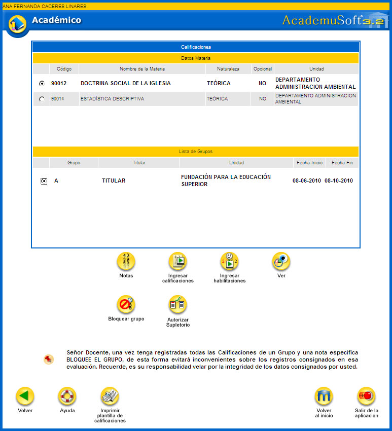
Esta funcionalidad permite al usuario visualizar las notas asociadas a una evaluación específica. Un ejemplo más claro ocurre cuando un docente programa un segundo parcial (éste sería la evaluación), el cual estará conformado por 2 (dos) notas de trabajos escritos y 1 (una) nota correspondiente a una exposición (estas son las notas de la evaluación). Tener en cuenta que el docente sólo podrá crear notas para las evaluaciones que tienen un alcance de GRUPO, las de alcance de INSTITUCIÓN corresponderán a las evaluaciones y notas establecidas por la Institución de Educación Superior.
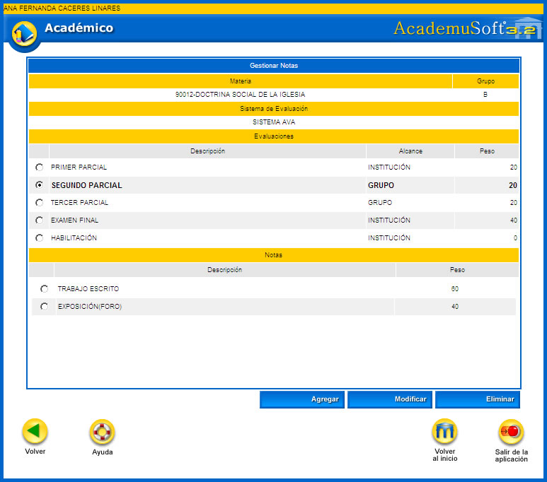
Opción Agregar: esta opción permite crear una nota para la evaluación elegida, además se le debe asociar el respectivo peso. Finalizada la gestión, el sistema solicita la confirmación del proceso, si la respuesta es afirmativa se emitirá un mensaje indicando el éxito del mismo.
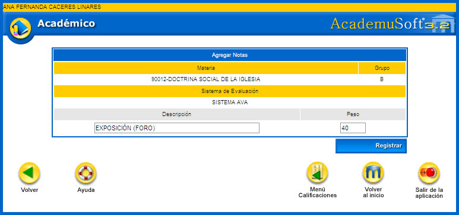
Opción Modificar: esta opción permite cambiar una nota para la evaluación seleccionada, además se puede dar otro valor al peso que ya estaba asociado. Finalizada la gestión, el sistema solicita la confirmación del proceso, si la respuesta es afirmativa se emitirá un mensaje indicando el éxito del mismo.
Opción Eliminar: esta opción permite borrar el registro creado para la nota. Finalizada la gestión, el sistema solicita la confirmación del proceso, si la respuesta es afirmativa se emitirá un mensaje indicando el éxito del mismo.
Esta funcionalidad permite el ingreso de las notas por evaluación programadas bien sea por la institución o por el docente. Para su registro se debe activar las fechas de ingreso de las mismas, esto lo realiza el administrador del sistema. Al dar clic sobre esta función el sistema despliega una interfaz en la cual se debe seleccionar la Evaluación, luego se elige la nota respectiva. A lado derecho se encuentra un campo en el cual se puede cambiar la cantidad de alumnos por página que el docente desea que sean mostrados. El sistema por defecto únicamente permite que se carguen 10 registros máximo por página. Luego se debe dar clic sobre la opción Continuar.
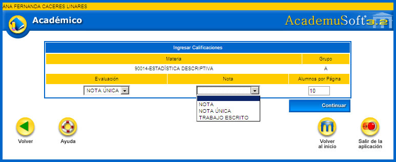
El sistema despliega una interfaz en la cual se muestra el listado de estudiantes que han matriculado la asignatura. Inicialmente no existe ninguna nota. El docente procede con el ingreso de las mismas indicando el valor en el rango establecido por la institución (Por ejemplo de 0 a 5). En la parte derecha aparece un combo en el cual se puede seleccionar un posible estado, de acuerdo a las circunstancias reales al momento de la realización de la evaluación de los estudiantes.
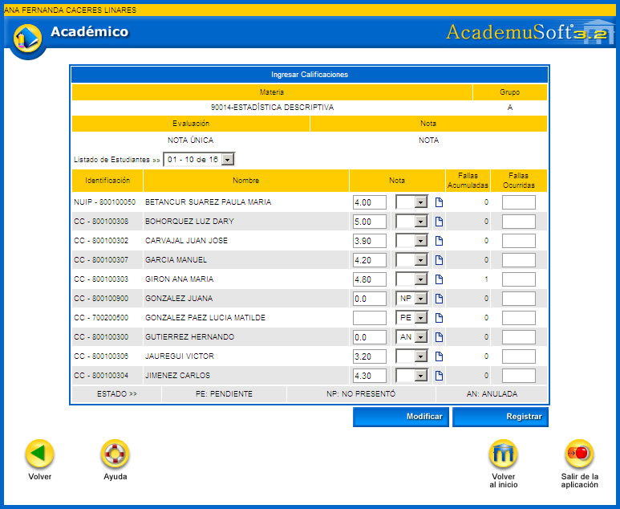
Explicación de los estados:
1. PENDIENTE: Significa que el estudiante no pudo estar presente en la fecha programada para la presentación de la evaluación. Al colocarse este estado, el campo de la nota queda vacío.
2. NO PRESENTÓ: Significa que el estudiante no quiso presentar la evaluación. Al colocarse este estado, el campo queda con la calificación mínima que se tenga parametrizado en el sistema de calificación. Para este ejemplo es 0.0.
3. ANULADA: Significa que el estudiante incumplió con las normas establecidas para la presentación de la evaluación. Al colocarse este estado, queda con la calificación mínima que se tenga parametrizado en el sistema de calificación. Para este ejemplo es 0.0.
Al dar clic sobre la imagen , el docente puede registrar observaciones específicas del alumno. El sistema genera una ventana emergente para que se ingrese el detalle de la justificación, luego hay que dar clic sobre la opción Asignar. El sistema guarda la información y no requiere de confirmación previa.
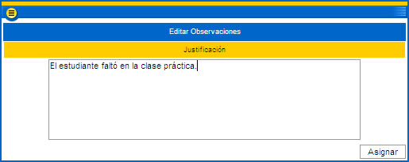
También el docente puede ingresar el número de fallas originadas por la ausencia en las clases programadas de los estudiantes. Estas fallas son acumulables. Si la materia está parametrizada para que sea perdida por fallas, el sistema inhabilitará esta asignatura para que el docente no pueda gestionar notas y le asignará la nota definitiva cuyo valor es asociado por el administrador del sistema en la funcionalidad: Gestionar Reglas/ Reglas de Aprobación.
Una vez registrada esta información y todas las notas del primer panel de estudiantes, el docente debe dar clic sobre la opción Registrar. El sistema solicita la confirmación del proceso, si la respuesta es afirmativa se emitirá un mensaje indicando el éxito del mismo. Luego se vuelve a habilitar una opción de Continuar, en el cual se emite el siguiente mensaje: ¿ Desea continuar calificando la misma nota para el mismo grupo?, si la respuesta es afirmativa el sistema regresa a la misma interfaz en la cual se ingresaron las notas.
Cuando el docente ya no vaya a ingresar más calificaciones sobre la nota del grupo de referencia, simplemente se devuelve al menú principal.
Para que el docente realice este proceso, es importante que el estudiante efectúe los pagos respectivos y sean registrados en el sistema, siempre y cuando las asignaturas sean habilitables.
Una vez verificados estos procesos, el sistema despliega una interfaz en la cual se listan los alumnos que perdieron la materia, pero no quiere decir esto que todos la hayan habilitado. El docente procede con el ingreso de las notas de habilitación de los alumnos, luego hay que hacer clic sobre la opción Registrar. El sistema solicita la confirmación del proceso, si la respuesta es afirmativa se emitirá un mensaje indicando el éxito del mismo.
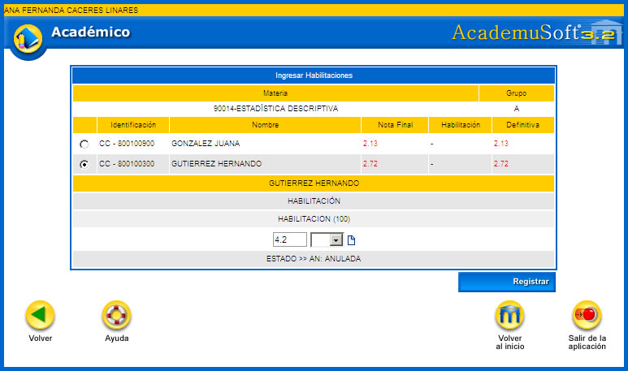
Una vez se actualiza la información, la interfaz queda como se indica a continuación:
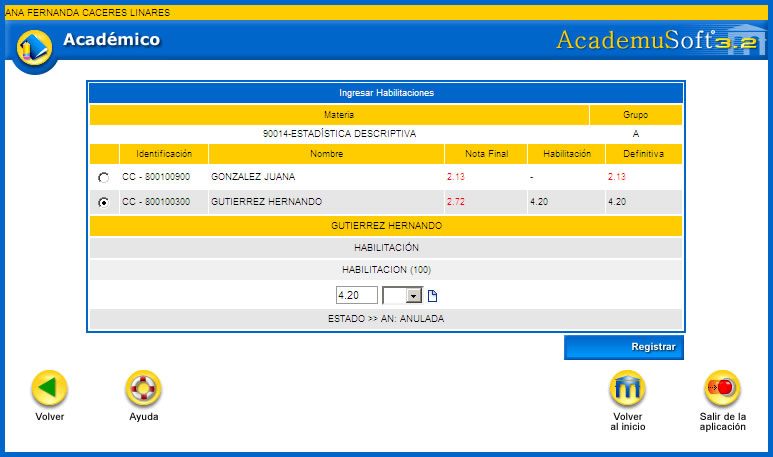
Esta funcionalidad permite generar una previsualización de las notas ingresadas por el docente. Dispone de una funcionalidad o ícono para Imprimir.
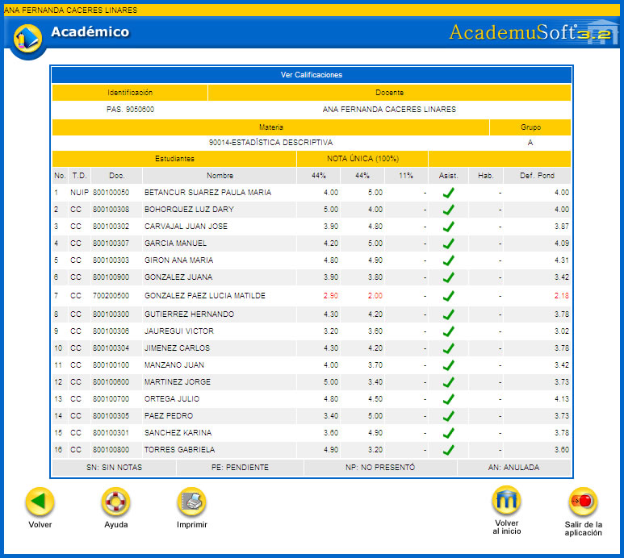
Opción Imprimir: al dar clic sobre este ícono, el sistema genera una consulta o reporte en formato PDF.
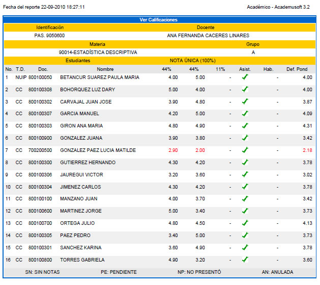
Esta funcionalidad permite al docente asignar un bloqueo a las notas que ha ingresado para un grupo específico, con el objetivo de brindar seguridad sobre la información ingresada por éste. Esta restricción se realiza a la evaluación y a las notas anteriormente gestionadas. Si el docente desea realizar cambios sobre las notas ya registradas para un grupo bloqueado, debe solicitar el desbloqueo al administrador del sistema o la dependencia que sea responsable de este proceso.
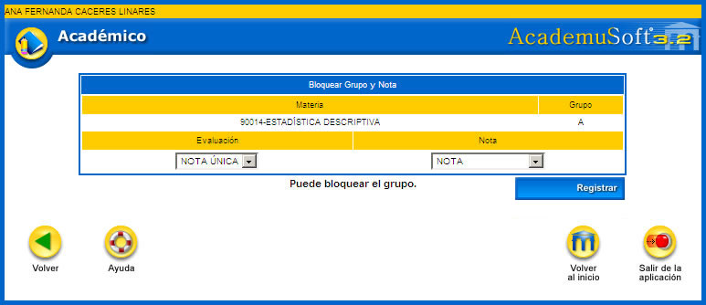
Una vez seleccionados los registros que se van a autorizar para su bloqueo se debe dar clic sobre la opción Registrar. El sistema solicita la confirmación del proceso, si la respuesta es afirmativa se emitirá un mensaje indicando el éxito del mismo habilitando nuevamente la opción Continuar.
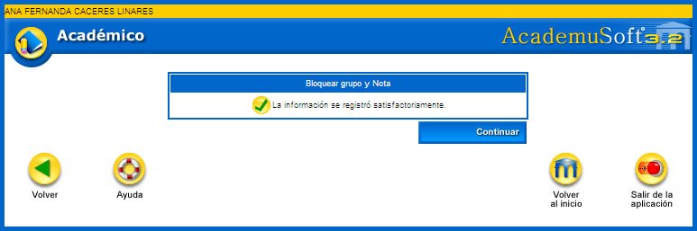
Al dar clic sobre la opción Continuar, el sistema vuelve a generar una confirmación en la cual se emite el siguiente mensaje: ¿Desea continuar bloqueando las notas del grupo?, si la respuesta es afirmativa el sistema regresa a la misma interfaz en la cual se ingresaron las notas indicando que han quedado bloqueadas, tal como se muestra en el siguiente ejemplo:
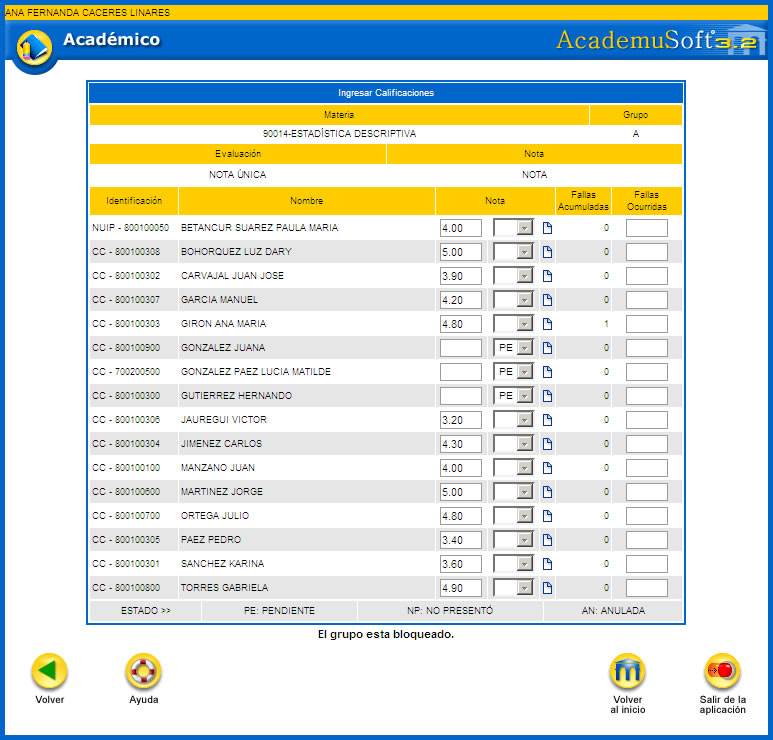
Esta funcionalidad permite al docente dar una autorización previa al registro de supletorios que deben realizar en la dependencia de Registro y Control. Esta función estará vigente dentro del rango de fechas parametrizado para el ingreso de las notas de acuerdo a las cohortes programadas por la institución. Se debe seleccionar la evaluación y la nota específica, se listan posteriormente los alumnos cuya calificación está asociada con el estado: PENDIENTE. El profesor debe chequear los alumnos que presentarán el supletorio y luego debe dar clic sobre la opción Registrar. El sistema solicita la confirmación del proceso, si la respuesta es afirmativa se emitirá un mensaje indicando el éxito del mismo.
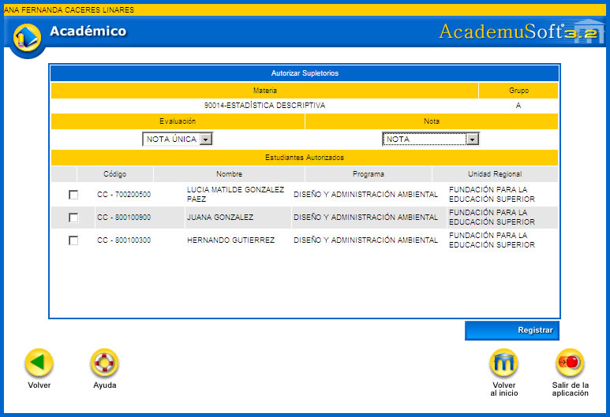
Finalizado el proceso, el administrador del sistema debe proceder con el ingreso de las notas respectivamente.
1.7 IMPRIMIR PLANILLA DE CALIFICACIONES
Esta funcionalidad permite al docente generar una impresión en formato PDF de los estudiantes matriculados en la asignatura y grupo seleccionado. Esta se asemeja a una cuadrícula que permitirá ingresar en forma manual y por escrito las notas obtenidas por los alumnos. Se puede observar las columnas que se construyen a partir del sistema de evaluación asignado y el horario de la materia.
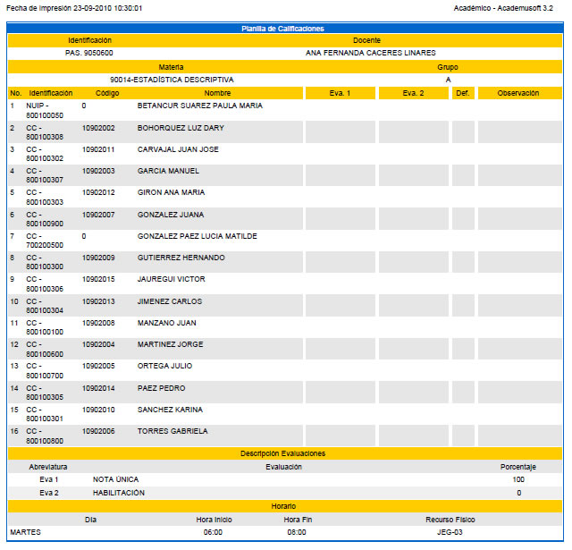
Esta funcionalidad permite visualizar los datos personales del docente, que es gestionado desde el módulo de Carga administrativa. Si se desea realizar cambios sobre la información y la imagen fotográfica mostrada, hay que dirigirse a la oficina encargada de estos procesos de actualización. Las fotos deben ser de extensión jpg, gif, jpeg con tamaño inferior a 100Kb.
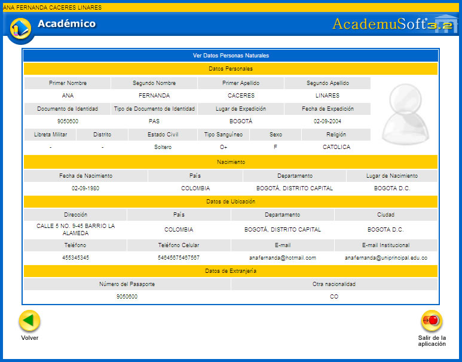
Esta funcionalidad permite al docente consultar el horario de acuerdo con las materias asignadas, se pueden realizar por unidad regional, tipo de periodo y periodo académico.
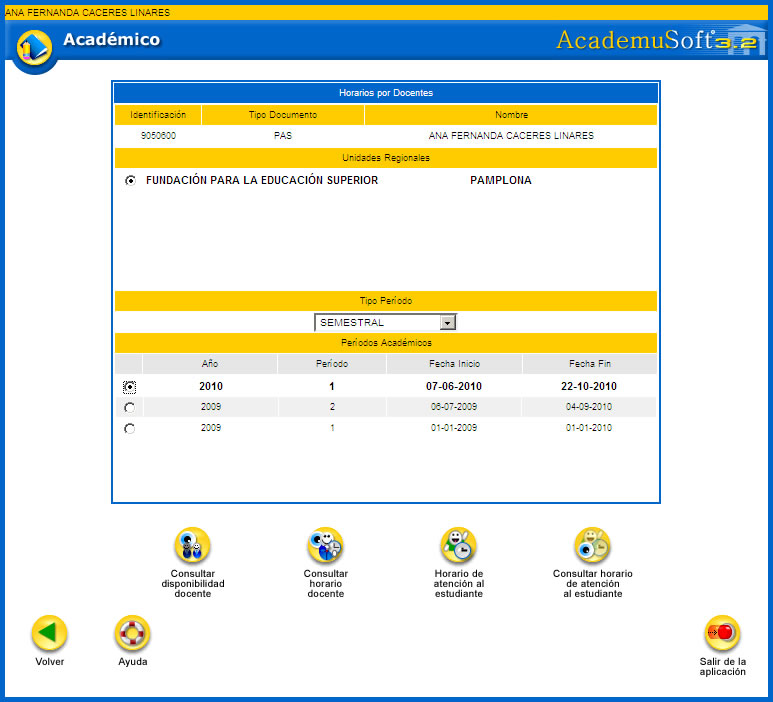